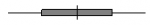

線タブはボックスチャートのヒゲ(垂線＋キャップ)の線、中央値線、平均線、分布曲線に関する編集を行います。
グラフ内のヒゲの表示を制御します。
線種、太さ、色オプションが自動に設定されている場合、ヒゲの線はボックスの枠線と同じ設定になります。
| 線種 | このドロップダウンリストからヒゲのスタイルを選択します。 |
|---|---|
| 線の太さ | このコンビネーションボックスではヒゲの太さを選択または入力します。線の幅はポイント単位とし、１ポイント＝ 1/72インチとなります。 |
| 線の色 | このドロップダウンリストから、ヒゲの色を選択します。 |
このコンビネーションボックスではキャップ線の長さを設定します。キャップの長さはボックス幅のパーセント値を入力します。
グラフ内のヒゲの表示を制御します。
線種、太さ、色オプションが自動に設定されている場合キャップのフォーマットはヒゲの線と同じ設定になります。
| 線種 | このドロップダウンリストから希望のキャップ線の種類を選択します。 |
|---|---|
| 線の太さ | このコンビネーションボックスではキャップの太さを選択または入力します。線の幅はポイント単位とし、１ポイント＝ 1/72インチとなります。 |
| 線の色 | このドロップダウンリストから、キャップ線の色を選択します。 |
グラフ内の中央値線の表示を制御します。
以下のオプションが自動に設定されている場合、中央値線はボックスの枠線と同じ設定になります。
| 線種 | このドロップダウンリストから希望の中央値線の種類を選択します。 |
|---|---|
| 線の太さ | このコンビネーションボックスでは中央値線の太さを選択または入力します。線の太さはポイントを単位とし、１ポイント＝ 1/72インチとなります。 |
| 線の色 | このドロップダウンリストから、中央値線の色を選択します。 |
グラフ内の平均値線の表示を制御します。
以下のオプションが自動に設定されている場合、平均線はボックスの枠線と同じ設定になります。
| 線種 | このドロップダウンリストから希望の平均線の種類を選択します。 |
|---|---|
| 線の太さ | このコンビネーションボックスでは平均線の太さを選択または入力します。線の太さはポイントを単位とし、１ポイント＝ 1/72インチとなります。 |
| 線の色 | このドロップダウンリストから、平均線の色を選択します。 |
この項目は線の透過率を示します。コンビネーションボックスに直接整数(1から100)を入力するか、目盛りをスライドして値を決めます。なお、0は完全に不透明で、100は完全に透明になっています。
平均値または中央値線を、ボックスの外側に延長するための設定です。例えば、 のようなボックスチャートに設定できます。
| 延長線 | 平均線、中央値線あるいは両方をボックスの外側に延長するか設定します。 |
|---|---|
| 追加長さ(%) | 両側の追加する線の幅を選択または入力します。現在のボックス幅のパーセントの値で設定します。 |